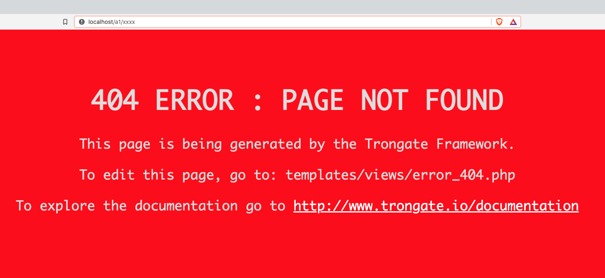

404 Error Pages
If the Trongate framework is unable to map a URL to a valid endpoint then a 404 error page will be displayed. By default, this is a bright red page that looks like this:

Changing The Appearance Of Your 404 Error Page
The HTML code for the 404 Error page can be found inside:
templates/views/error_404.php
Modifying the appearance of your default 404 error page is as simple as editing the HTML within the error_404.php file.
Whenever you visit a webpage, your computer uses the HTTP protocol to execute an HTTP request (usually a 'GET' request). The server that receives your request will return a 'header' that contains a numeric value. This number is the HTTP Response Code. If everything is working, as normal, then the HTTP Response Code will usually have a value of 200. However, if there is 'page not found' error then the server will usually respond with an HTTP Response Code of 404. This is the reason why 'not found' pages are often called '404 Error Pages'